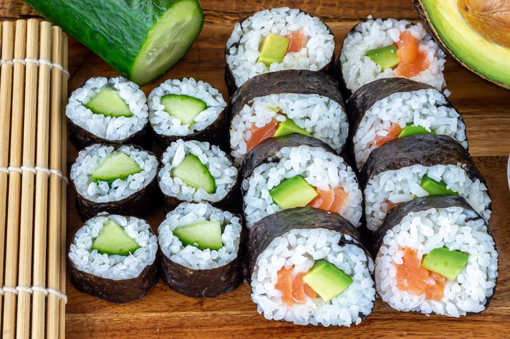

Para preparar sushi casero, sigue estos pasos sencillos:
1.Cocina el arroz especial para sushi y enfriarlo con un abanico.
<
2.Aliña el arroz con vinagre, azúcar y sal.
3.Corta el pescado en tiras finas y colócalas en una hoja de alga nori.
4.Extiende el arroz sobre el pescado y añade ingredientes como pepino y aguacate.
5.Enrolla la hoja de alga y corta en porciones para servir.
Recuerda que el sushi se puede rellenar con lo que desees, como mariscos, carne, pollo, verduras, frutas, tofu, etc.
